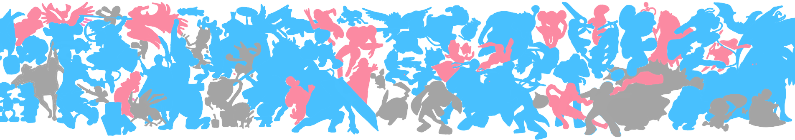
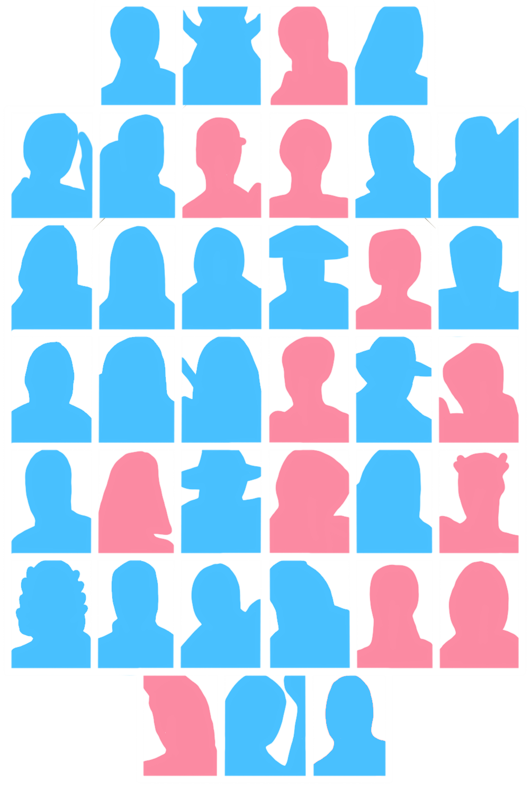
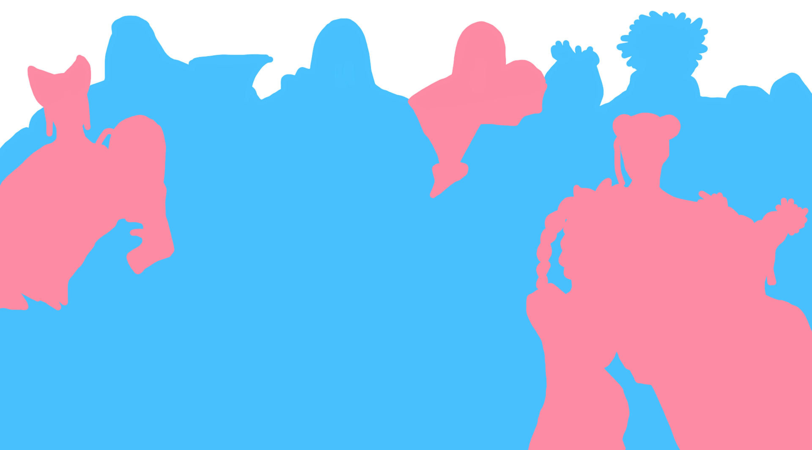

Out of 32 original main fighters, 11 are female. That's 34%.
Out of 86 main fighters, 14 are (only) female. That's 16%.
In their original games, a vast majority of the female characters are love interests
or support, while the male fighters are mostly protagonists and heroes.
Note: The banner also depicts female characters that are part of a pair with a male
character, while the statistic does not count those characters.

Out of 37 main fighters, 12 are female. That's 32%.
While they have improved in recent games, the female characters' designs are widely
criticized for their revealing, unprotective, and constricting nature.

Out of 18 main fighters, 8 are female. That's 44%.
Chun-Li, introduced in Street Fighter II, is known as the first playable female
character in a popular one-on-one fighting game.

Out of 35 original main fighters, 18 are female. That's 51%.
Although the number of female and male fighters are balanced, female characters
are mostly support types, and male characters are mostly tank types.